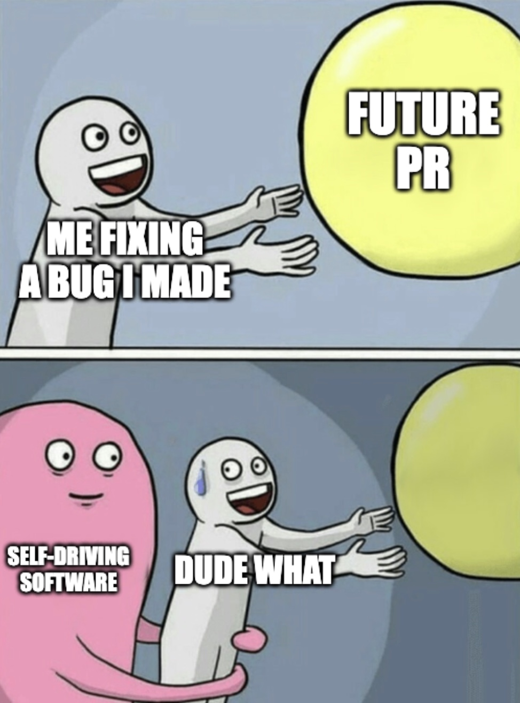
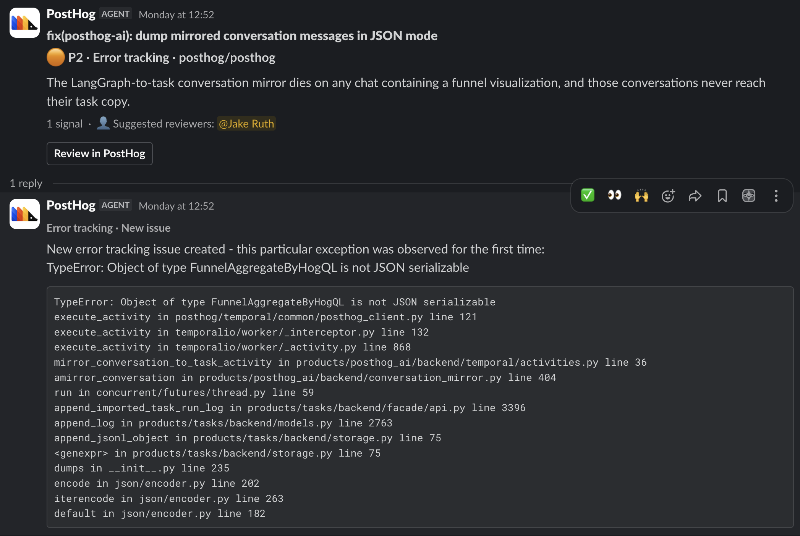
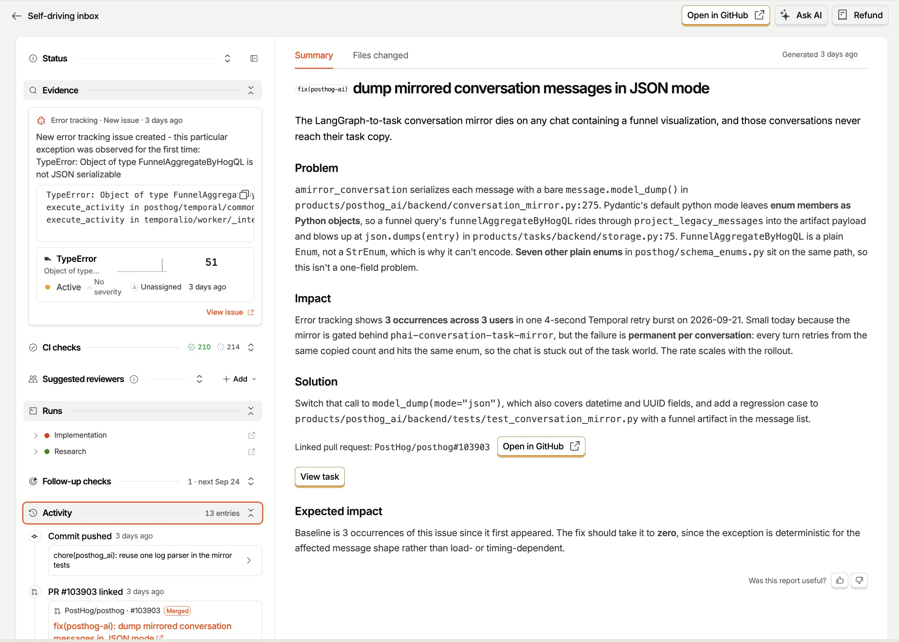
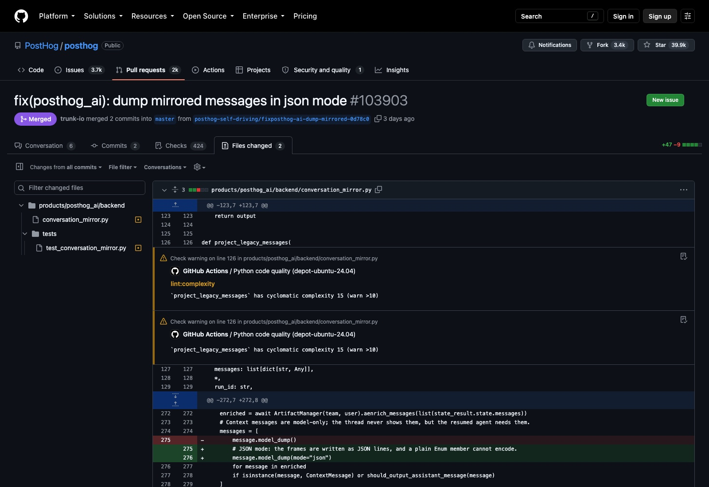
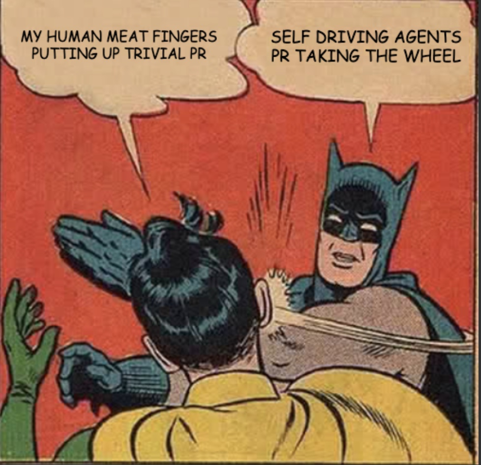

AI Tinkerers NYC · September Demo Day ft. PostHog · 23 September 2026
The venue bans slides, so this was eight browser tabs and five minutes. Here they are, in the order the room saw them.
6m18s. Sorry about the audio — it's a QuickTime screen recording off my laptop, so the picture is exact and the room sound is rough.
What happened. On 21 September a funnel enum crashed the PostHog AI conversation mirror in production. The self-driving loop found it, researched it in a sandbox, and opened a pull request. I was 42 seconds into fixing the same bug by hand and had no idea.
My fix was the identical one-line change. I binned my branch. The loop's PR is what merged.
Running a migration across thousands of objects. A couple didn't convert. Background job, nothing a customer could see, so no fire drill — the kind of bug you defer forever.

Mid-debug, this landed in Slack. A bug report and a pull request, for code I wrote, with me listed as the suggested reviewer. Nobody asked for it.

Two lanes on one clock. The loop in orange, me in grey until 12:51:12 and blue after,
because it had been working the problem for 34 minutes before I started. Every timestamp came from
the PostHog API, my local git reflog, or the GitHub API.
Two sandboxes on Modal, our dev-stack image, a 162-domain allowlist. It cloned the monorepo and had 6m25s with it: read the error, checked thirty days of similar issues to rule out noise, traced seven files, found the root cause, and noticed seven other enums with the same problem. Then it wrote a verification plan before any code — including the conditions under which its own evidence would be inconclusive.

Two files, +47 / −9, both commits the bot's. The interesting part is what it talked
itself out of: it considered making the enum a StrEnum and rejected it, because the enum is
schema-generated and seven others share the path. My line was identical to its line.

This is the part that mattered to the room. Not a README — the actual pipeline, and a cookbook of twenty-three things you can point a scout at. Bugs are the boring case.
What would you ask a scout to investigate?
I'm still a meat-fingers engineer learning to let it drive.
